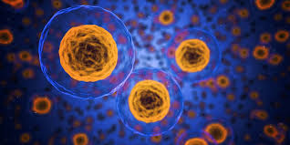

Células: Fundamento de la vida
Las células son la unidad fundamental de la vida. Todos los seres vivos están formados por células, las cuales realizan funciones esenciales para el mantenimiento y desarrollo de los organismos.
Existen dos tipos principales de células: procariotas y eucariotas. Mientras que las procariotas son más simples y carecen de núcleo, las eucariotas poseen una estructura más compleja y un núcleo bien definido.
El estudio de las células es clave para comprender la biología y la vida en general.
